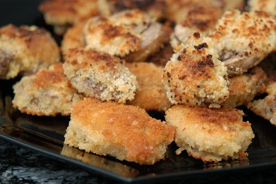

| Zutaten für 4 Personen: | |
| 750g | Riesen Champignons |
| 2 | Eier |
| 50g | Käse, gerieben |
| Paniermehl | |
| Salz | |
| Pfeffer | |
| Öl | |
Champignons in 1 cm dicke Scheiben schneiden.
Die Eier schaumig rühren, würzen und den Käse darunter mischen.
Die Champignon- Scheiben zuerst im Ei, dann im Paniermehl wenden.
Im heissen Öl auf beiden Seiten 2-3 Minuten backen.
Variante: Statt Käse fein geschnittenen Schnittlauch unter die Eier mischen.
Packungsbeilage zu Kuhn Champignons.
Schmecken ganz gut. Dass die auch nach etwas aussehen braucht wohl noch etwas Fingerfertigkeit. Ergibt aber sicher einen leckeren Apéro-Snack. RE 18.11.2009